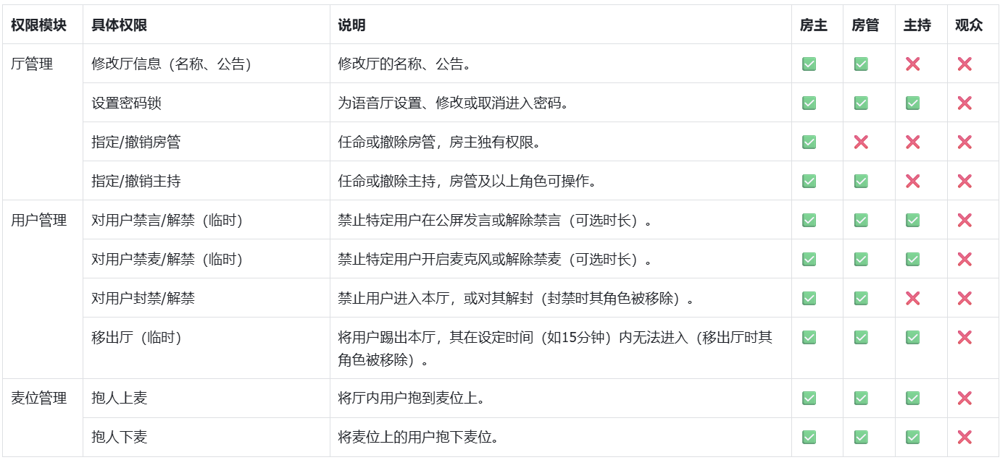

Oopz 的版本轨迹：一个语音社区产品的取舍与重心
从帮助中心的功能版图反推 Oopz 的迭代逻辑——哪些模块一直在被打磨，哪些长期处于搁置状态，以及照这个走向下一步可能发生什么。
现在这版 Oopz，是什么样
我第一次留意到 Oopz 的时候，它还只是一个可以拉人建语音房间的小工具。现在打开官网再看，已经不是了——域系统、频道体系、语音厅角色、饭票收益、会员体系、内置加速器……模块叠了一层又一层。

帮助中心的目录结构很能说明问题。它把功能分成了十个大类：下载、域与频道、语音厅、商城会员、内置加速器、故障排除……每个大类下面又铺了十几篇帮助文档。文档的粒度也越来越细——从早期的"怎么开房间"，到现在"电流麦排查清单""饭票提现风控红线""会员到期短 ID 保留规则"，连验证码收不到的自查方法都单独占了一页。
来路：它从哪起步
样本文档没有专门的版本迭代日志。官方帮助中心目前看不到 changelog 或者版本号时间轴，所有文档都只讲"当前规则是什么"，不讲"这条规则是哪一版加的"。这本身就是一个有意思的信号——产品还在快速迭代阶段，变化快到写版本史容易过时，或者团队压根没觉得对外公开迭代历史是必要的。
不过从现有功能的"新旧感"可以大致反推出顺序。语音厅的角色体系（房主/房管/主持/观众四级锁定、禁止越级管理） 看起来是比较早期就定下来的骨架——这套规则写死、不能自定义，说明产品初期就想清楚了"社区秩序"的底层逻辑，不想让运营方随意改权限搞乱生态。
无限公民会员 应该是中期加入的商业化层。十一项权益里，身份表达（短 ID、动态头像、炫彩用户名）占了一半多，剩下的是域管理和消费折扣——典型的社区产品会员设计：先让用户"看起来不一样"，再谈实际功能。
内置加速器 这个模块出现得相对晚，而且从帮助中心的篇幅看，它的完善度远不如语音厅和会员体系。有独立的排查页、有节点选择、有反掉线驱动说明，但文档里对加速器的参数调整和进阶设置写得很薄——更像是"加了一个功能但还在打磨"的状态。

规律：从迭代痕迹看团队的优先级
如果把帮助中心每个模块的文档篇幅、更新粒度、规则细化程度当作一个粗略的"投入度指标"，会很清楚地看到三件事：
第一，社区秩序是从头到尾死磕的。 角色体系写死不能改、饭票提现设风控红线、防诈骗反复强调、客服有专门的防冒充提醒——这一套组合拳下来，团队对"不让平台变成野路子"这件事是真的花了心思。语音厅管理条例、主播基础管理规则、纠纷处理流程……光规则类文档就比功能类文档多。
第二，商业化在稳步铺但比较克制。 会员只有一档（无限公民），没有多级分层；饭票的兑现路径也只有两条（兑点券或主播提现），没有复杂的手续费阶梯；商城的点券和秘宝也没做十几种货币互相兑换。对比同类语音社区产品动辄三五档会员、七八种虚拟货币的设计，Oopz 的商业化路径意外地干净。
第三，工具属性的功能在补但不够深。 内置加速器是最典型的例子——有，但不够细。域的创建和频道管理同理，基础功能齐全但进阶玩法单薄。帮助中心里关于域的文档主要集中在"怎么创建""怎么改名""身份组权限"，对于域之间的联动、跨域内容分发、自动化运营工具这些进阶场景，基本没有覆盖。
还有一件值得注意的事：客户端的打磨重心不明确。 帮助中心里 PC 端和移动端的文档篇幅相当，但语音质量相关的参数（采样率、降噪、回声消除）只在故障排除里零星提到，没有单独的"怎么调麦"指引。电流麦问题有排查清单，但"好麦是什么标准""怎么选设备"这类偏经验型的内容完全没有——说明团队在语音质量的"基础保障"上花了力气，但在"进阶优化"上还没投入。
预判：照这个路线，下一步大概会发生什么
纯从迭代规律推，不当官方口径：
最可能持续加深的还是社区秩序和治理工具。既然角色体系和风控规则已经铺了第一轮，下一步大概率是给房主和房管更多可配置的管理能力——比如房内禁言、关键词过滤、自动踢人，这些在帮助中心目前只提了"上级可以操作下级"，具体怎么操作还没文档。
加速器可能会补完进阶配置。 现在有节点选择和反掉线，但没有"自定义路由""游戏专用加速模式"这类深度功能。既然已经把加速器塞进帮助中心的十大分类，不太可能停在半成品状态。
不太会发生的事：大规模加会员档位或者引入更多虚拟货币。 从目前的克制程度看，团队对商业化的态度是"够用就行"，短期内应该不会搞复杂的分层。
至于迭代的速度，目前看不到放慢的迹象——帮助中心还在加新页面，旧页面也在更新。样本文档里"规则以官方最新版为准"这句话反复出现，本身就是在暗示变化还在继续。想看清楚 Oopz 最终会长成什么样，大概还得再等几个版本。
这套资料我在三个仓库都做了备份，从GitHub、Gitee到GitCode，从国内任何环境访问都能拿到完整的帮助文档和更新记录。